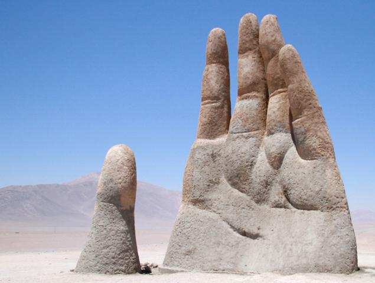
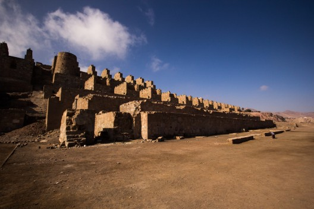
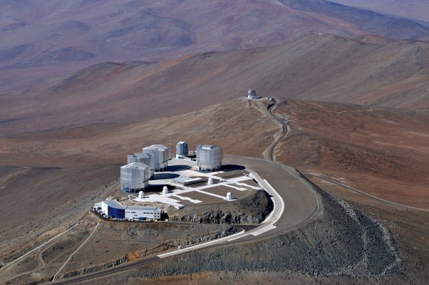

ANTOFAGASTA
Antofagasta es una ciudad portuaria y capital regional en un área minera del Desierto de Atacama, en el norte de Chile. Es conocida por su producción de cobre. Al norte de la ciudad, sobre la costa del Pacífico, está el Monumento Natural La Portada. Este enorme arco natural justo frente a la costa alberga gaviotas, pelícanos y, en ocasiones, focas y delfines. Al sudeste de la ciudad, en el Desierto de Atacama, está la "Mano del Desierto", una gran escultura de una mano.

Andrea: Más al sur está el Cerro Paranal, una montaña con un observatorio astronómico en su cima, donde se encuentra el telescopio Very Large Telescope. La ciudad antigua de Antofagasta es conocida por los edificios del siglo XIX, como la antigua casa de aduana que actualmente es el Museo de Antofagasta y exhibe la historia local. Cerca, se encuentra la antigua Estación de Ferrocarril de Antofagasta a Bolivia, que data de mediados del siglo XIX. En la costa, frente a la estación sobresale el Muelle Salitrero Compañía Melbourne Clark del siglo XIX. La Torre del Reloj, una réplica del Big Ben de Londres, se alza en el centro de la plaza de la ciudad antigua, Plaza Colón.
La Mano del desierto es una escultura ubicada a 75 km al sur de la ciudad de Antofagasta, a un costado de la ruta 5 Panamericana. Fue construida por el escultor chileno Mario Irarrázabal, a 1100 m s. n. m. La escultura, construida a base en hormigón armado, posee una altura de 11 m.
El monumento natural La Portada es uno de los 15 monumentos naturales comprendidos dentro de las áreas silvestres protegidas de Chile, que se ubica a 18 km al norte de la ciudad de Antofagasta.
Las ruinas de Huanchaca, son el vestigio de una antigua fundición de plata, localizada en Antofagasta, Chile. Fue declarado el 7 de enero de 1974 como Monumento Histórico Nacional, según el Decreto Supremo nº 9 del Consejo de Monumentos Nacionales de Chile.
La plaza Colón corresponde a la plaza de armas de la ciudad de Antofagasta. Es un parque urbano con forma de manzana ubicado en el sector centro de la ciudad, a escasas cuadras de la costa al océano Pacífico.
El cerro Paranal es una montaña ubicada en el desierto de Atacama, en el norte de Chile. Se ubica a 120 km al sur de Antofagasta y a 80 km al norte de Taltal, 12 km al interior. Es famoso porque en él se encuentra ubicado el observatorio Paranal, operado por la European Southern Observatory.
